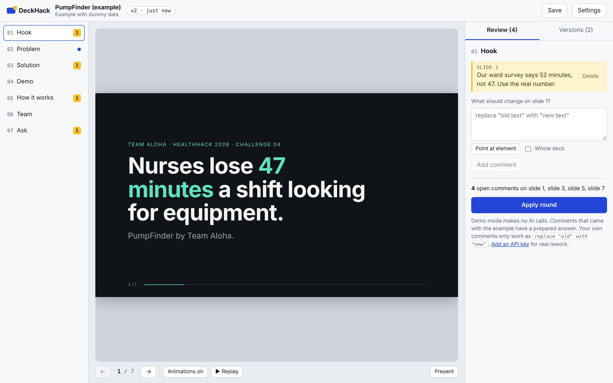
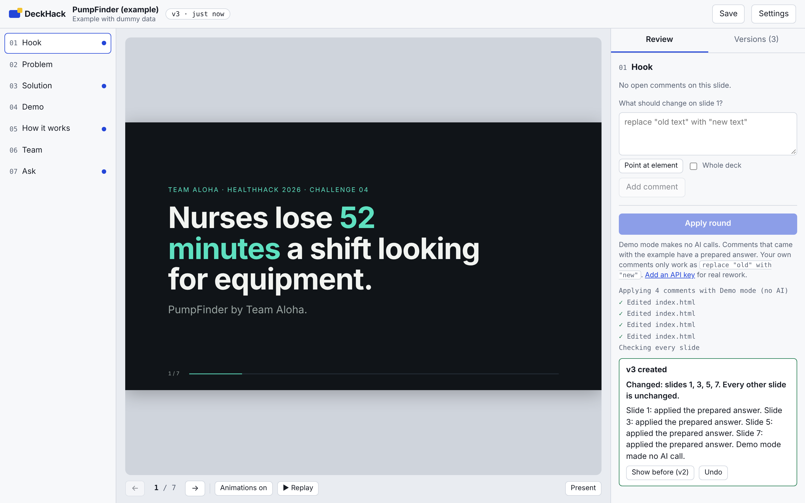

How it works
Comment, apply, check. Then the next round.
No more one long chat and jumping back and forth between the chat and the presentation.
01Say it where it is wrong
Click through the slides and type what should change. Point at a headline or a number to make clear which element you mean. Notes wait on their slide until you are done.
Our ward survey says 52 minutes, not 47.
02Apply the whole round
The AI makes small, exact edits to your files. DeckHack then reloads the deck, walks every slide and compares it with the version before. A fix on slide 8 that quietly moved slide 3 shows up as a warning, not on stage.
Changed: slides 1, 3, 5, 7. Every other slide is unchanged.
03Go back whenever you want
Every round is a version. Flip between before and after on the same slide, undo a round or restore any earlier state. Restoring adds a version, so nothing is ever lost. Save as a commit on a branch of your repository or as a zip.

Any HTML deck
One element per slide, reveal-style sections, or decks that build their scenes in JavaScript and show a counter like 08 / 17. Your deck stays plain HTML and runs without DeckHack.
Three ways in
Start from a template, drop a file, folder or zip, or paste a GitHub link. localhost:8080/?deck=github.com/you/repo opens a deck directly.
With and without animation
Freeze animations to judge the layout, replay a slide to judge the timing, step through scripted scenes, present fullscreen.